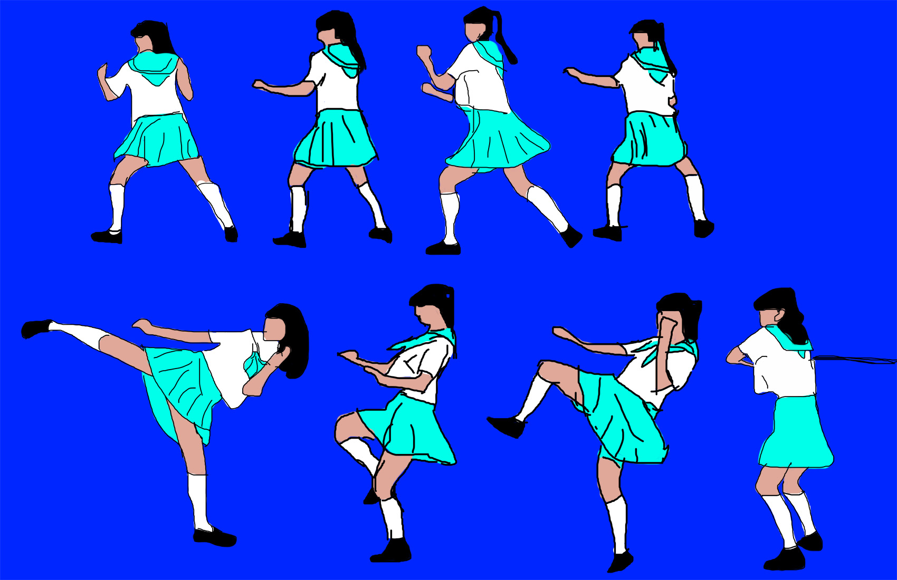
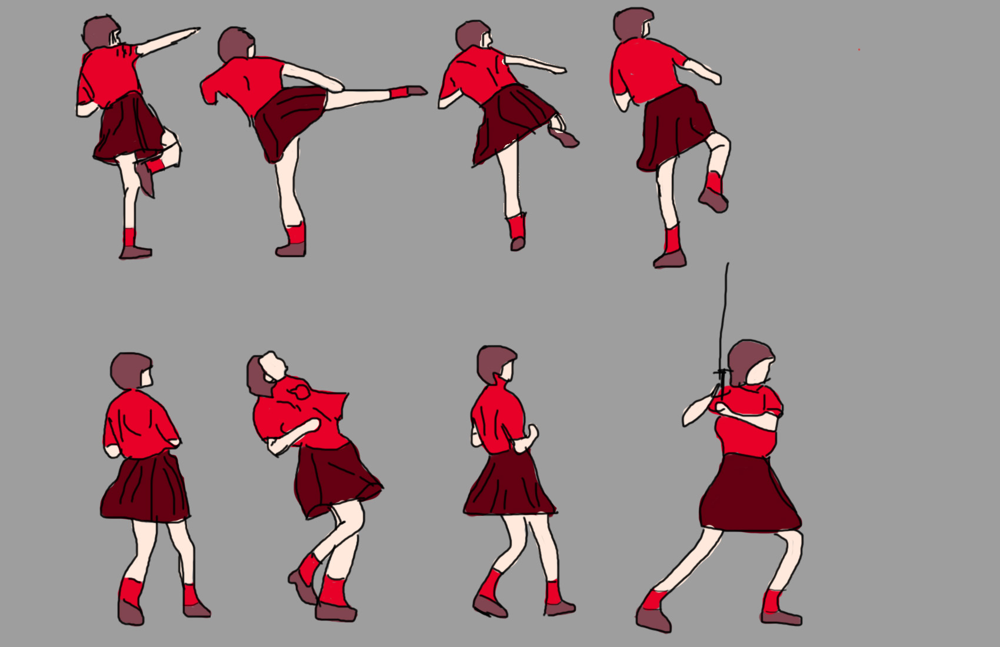
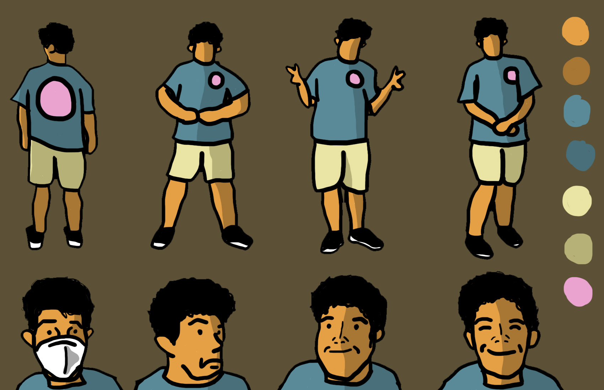
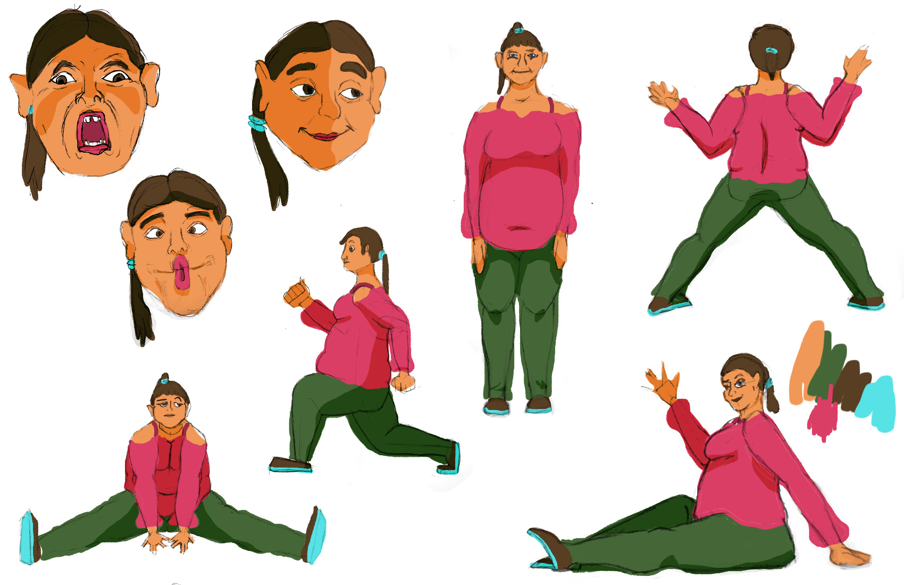
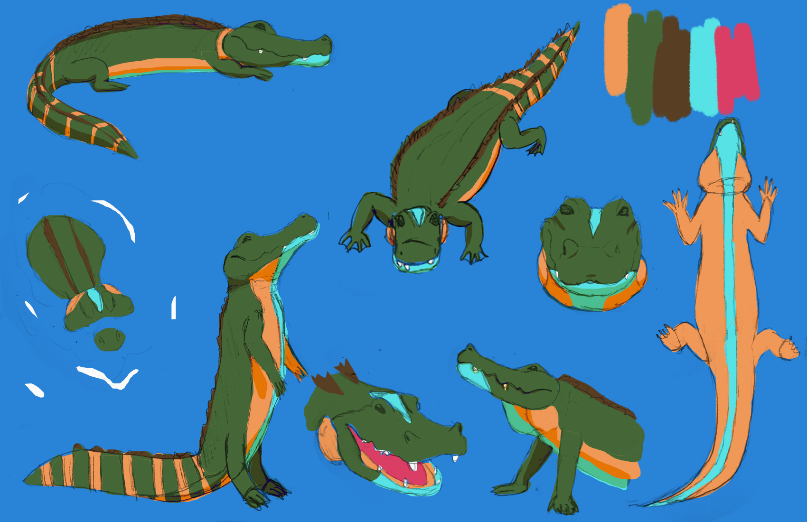

JW
when I doing this project I felt this is gonna be a long time work because I accidentally put that image size to 170000 pixels, which cause my photoshop to crash a lot of time while I didn't save anything. the challenge about this project will be deal with the crashed photoshop.
 TW
A man dancing with a basketball, and some cute penguins.

RL
One of the biggest challenges for me was getting used to drawing with a stylus and tablet on Photoshop because I am used to drawing digitally on Procreate with my iPad Pro. I was able to get around this difficulty by drawing over the reference sketches as slowly as I can with the brush tool so I can get used to using a stylus and tablet.
Comments:
My Comment, woo hoo
I greatly enjoy the expressions of the snapping turtle (I assume). They bring a lot of life to the character. The shading also adds a lot of depth to the drawings as well. The top left human sketch, with just a touch of light on the side, looks really dramatic.
SG
My friend told me that you can set up your ipad pro to act as a display drawing tablet with some software
ND
Love the color pallete you worked with here, very warm soft and comforting, really compliments the vibes of your skletches!
Mine Baby!
I kind of completely forgot that clothes existed while drawing the human sketches so the colors had to do most of the work to make it look like my character wasn't wearing fullbody spandex. I don't think it completely worked. It was also pretty demoralizing finding proper reference images for my human character. I also chose the color palette for the alligator rather than the human, leading to an odd outfit. I am still deciding on a few things about the alligator's design. Because I used a pencil instead of a pen, the drawings lost some of their detail while changing their background to white.
 Comments:
SH
I really love the way you chose to express your character. The way you included different facial expressions show how your character seems to have a fun personality and it makes it a bit more relatable. I also love how you tied the alligator's color scheme into your character's outfit.
BL
I find these drawings extremely compelling due to the amount of detail incorporated in each pose and character. The color choices go so well together and seem to match each other very well. I like the variety of poses and expressions as it gives us a glimpse of how the characters would fit into a game.
WW
I really like the alligator. The tail reminds me of a racoon's tail. I also really like the light blue highlight on the top and bottom of the alligator. I don't know if they were intentional, but the directional sketch marks on the back of the alligator look very natural too.
SZO
Your concept sheets are very rich in color which makes them appealing to the eye. I think it is interesting to note that even though you forgot to draw the clothes, the way you drew on the clothes just using color was done very well. I like the way you used shading to show more depth to your character. The alligator you drew is interesting as well, I like that they look happy, not aggressive.
Comments:
CVC
I really find it compelling how your poses for the character designs have some form of sequence, specifically showing a kicking animation. The art made for the project is quite dynamic and does not feel like its a static image. It is visually unique in a sense that the feeling behind the character's motion is seen through the sketch style and its details with the character moving in a sort of 3D space in its art sequence rather than a fixed 2D image.
NZ
What makes this visually unique is the movement of the characters, as well as the bright colors used within the work. I was first attracted to this design because the vibrant colors stood out to me. The color of the first character's skirt (the bright blue) contrasts with the dark blue background and it makes the eyes more attracted to the character. Similarly with the second design, against the plain grey background, the character is dressed in a bright red so it appeals to the eyes. I also really enjoyed seeing the variation of movement in both character designs, from standing to kicking to holding a sword, it was really compelling to me.
ND
I love the dynamic motion established in your work, very unique and cool!